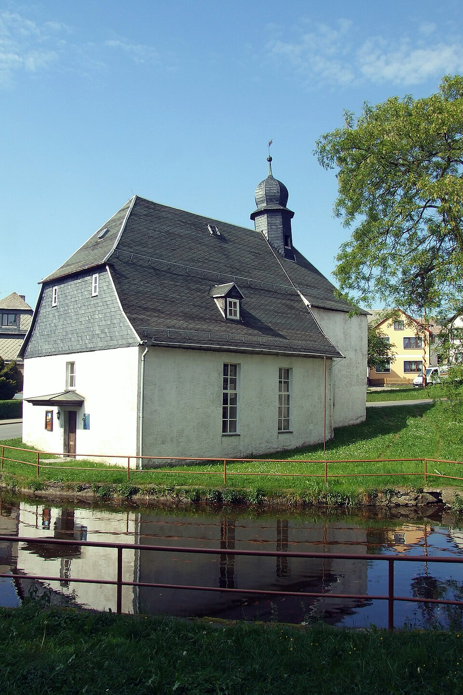

Geschichte von Steinsdorf bei Leutenberg
Am 14. Dezember 1413 wurde der Ort erstmals urkundlich erwähnt. Die Gemeinde informiert, dass die Besiedlung in dem 11. Jahrhundert bei der Rodung der Wälder schon begann. Es waren wohl Sorben, denn sie legten ein Rundlingsdorf an. Der Ort gehörte zur Grafschaft Schwarzburg-Leutenberg und nach dessen Erlöschen von 1564 bis 1918 zur Oberherrschaft der Grafschaft bzw. des Fürstentums Schwarzburg-Rudolstadt. Die Andreaskirche wurde 1716 nach einem Brand gebaut. 1830 wurde sie noch einmal saniert und besitzt seitdem die kleinste bespielbare Barockorgel Thüringens. Nach erfolgter Restaurierung erklang sie 1995 wieder. 1993/94 fand eine grundhafte Dorferneuerung statt. Neben der herkömmlichen Landwirtschaft besteht jetzt ein großes Damwildgehege. Wanderwege zu landschaftlich einmaligen Punkten sind für Touristen geschaffen. 1997 wurde Steinsdorf eingemeindet und ist seitdem ein Ort der Einheitsgemeinde Stadt Leutenberg. 2013 wurde eine große Feier mit Festumzug zum 600-jährigen bestehen von Steinsdorf abgehalten. 2022 wurde die Kreisstraße von Leutenberg zum Ort erneuert. 2025 wurde im Ort Glasfaser verlegt und es ist damit ein schnelles Internet im Ort vorhanden.
Aktuelles
Am 7. Juni sind Kreistagswahl. Die Stimme kann im Gemeindesaal abgegeben werde. Bitte den Personalausweis und die Stimmkarte mitbringen.Gallery
